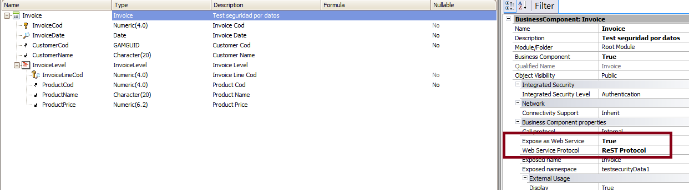

This document explains how to update data using a Business Component exposed as a Rest web services in GeneXus in GeneXus. First, let's see the basic guidelines: How do I call the Rest service in GeneXus?Use the HttpClient data type. What are the HTTP methods to update data?Two methods have to be executed:
ExampleConsider the following example, where we want to update an Invoice (which is a two-level transaction). Note that the BC is exposed as a Rest Service.  In this example, we are going to update the Invoice adding a new line to it. As explained before, there are two steps to follow, as explained below:
&httpclient.Host= &server
&httpclient.Port = &port
&httpclient.BaseUrl = &urlbase
&httpclient.Execute('GET','Invoice/1')
if &httpclient.StatusCode = 200
&result = &httpclient.ToString()
&invoicesdt.FromJson(&result) //&invoicesdt already contains the gx_md5_hash information loaded
&invoicesdtlevel = new() //Adding a new line...
&invoicesdtlevel.InvoiceLineCod = 4
&invoicesdtlevel.ProductCod = 1
&invoicesdt.InvoiceLevel.Add(&invoicesdtlevel)
&addstring = &invoicesdt.ToJson() //to JSON format..
&httpclient.AddString(&addstring)
&httpclient.AddHeader('content-type','application/json') //Adding the necessary headers
&httpclient.Execute('PUT','Invoice/1')
if &httpclient.StatusCode = 200
msg("Data successfully added")
else
msg("There was an error udapting the data: " + &httpclient.StatusCode.ToString())
endif
else
msg("There was an error retrieving the data: " + &httpclient.StatusCode.ToString())
endif
Note that in this example the PK is sent in the body as well. This is necessary until GeneXus X Evolution 3 only. Download the sample from Sample Update Rest services Notes:
Troubleshooting
{"error":{"code":"500","message":"The incoming message has an unexpected message format 'Raw'. The expected message formats for the operation are 'Xml'; 'Json'. This can be because a WebContentTypeMapper has not been configured on the binding. See the documentation of WebContentTypeMapper for more details."}} The reason is that you missed the appropriate header in the request. Add 'content-type: application/json' header.
&httpclient.Execute('PUT','Invoice/1')
&httpstatus = &httpclient.StatusCode
msg('Http status: ' + &httpstatus,status)
&result = &httpclient.ToString()
msg('Output: ',status)
msg('=========',status)
msg(&result,status)
The following would be printed:
Http status: 200
Output:
=========
{"InvoiceCod":1,"InvoiceDate":"2016-03-01","CustomerCod":"C56A4180-65AA-42EC-A945-5FD21DEC0538","CustomerName":"juan","InvoiceLevel":[{"InvoiceLineCod":1,"ProductCod":1,"ProductName":"product1","ProductPrice":12.0000},{"InvoiceLineCod":4,"ProductCod":1,"ProductName":"product1","ProductPrice":12.0000}],"gx_md5_hash":"4C921FA040E330D0EF68F96354420A79"}
Note:
|
| Backlinks |
| Toc:Rest web services in GeneXus |